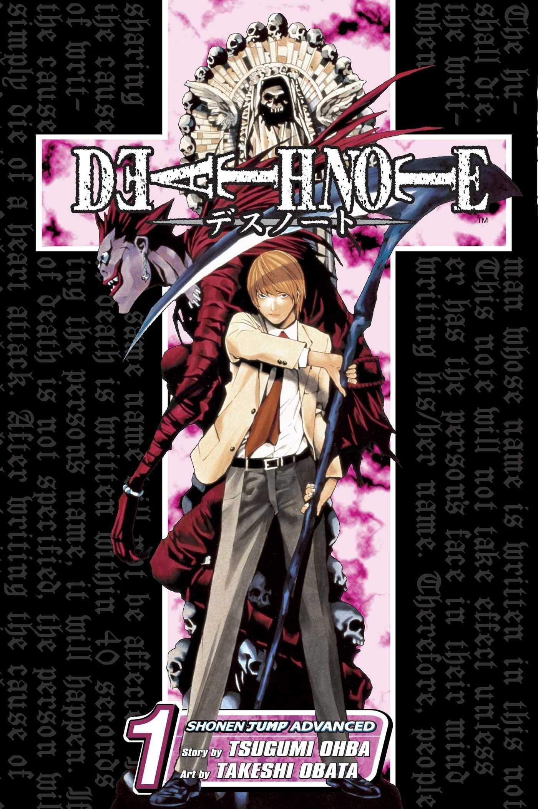

Death Note vol 1
O Volume 1 de Death Note apresenta o estudante Light Yagami, que encontra um caderno sobrenatural que mata qualquer pessoa cujo nome seja escrito nele. Conforme ele começa a matar criminosos, a polícia, com a ajuda do superdetetive L, inicia uma caçada para encontrar o responsável, dando início a um jogo de gato e rato intelectual entre Light (Kira) e L.